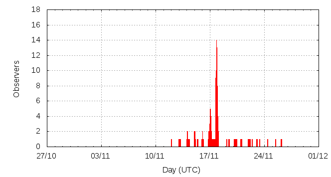

[ www.imo.net ]
This page shows automated results of the Leonids 2012, based on visual observations reported by citizen scientists through the report form of the International Meteor Organization (IMO). The information on this page is generated automatically; for scientific use please refer to manual analyses published in scientific journals (such as WGN). Send your feedback regarding this page to Geert Barentsen.
Page contents:
Note that the data will finally go into the Visual Meteor Database (VMDB) with manual inspection and rectifications. We are curretly completing the files of 2008-2011. The VMDB is an enormous project - any help will be greatly appreciated.
Page generated: 2013 August 21 at 21:05 UTC.
The graph below shows the ZHR (Zenithal Hourly Rate), which is the number of meteors an observer would see under a very dark sky with the radiant of the shower in zenith.
ZHRmax = 47 based on 366 Leonids reported in 142 intervals, assuming population index r = 2.5

| Time (UTC) | Solarlon | nINT | nLEO | ZHR | Particle density | |
|---|---|---|---|---|---|---|
| 2012-11-12 08:58 | 230.205 | 3 | 8 | 17 | ±6 | 33 / 109·km3 |
| 2012-11-13 14:32 | 231.445 | 4 | 15 | 8 | ±2 | 16 / 109·km3 |
| 2012-11-14 05:13 | 232.061 | 5 | 15 | 8 | ±2 | 16 / 109·km3 |
| 2012-11-15 00:42 | 232.879 | 6 | 15 | 9 | ±2 | 18 / 109·km3 |
| 2012-11-15 07:14 | 233.154 | 3 | 15 | 10 | ±2 | 20 / 109·km3 |
| 2012-11-16 00:31 | 233.880 | 6 | 22 | 15 | ±3 | 29 / 109·km3 |
| 2012-11-17 00:18 | 234.879 | 7 | 16 | 12 | ±3 | 24 / 109·km3 |
| 2012-11-17 01:34 | 234.932 | 6 | 16 | 10 | ±2 | 20 / 109·km3 |
| 2012-11-17 02:30 | 234.971 | 2 | 17 | 12 | ±3 | 24 / 109·km3 |
| 2012-11-17 03:29 | 235.012 | 3 | 15 | 8 | ±2 | 16 / 109·km3 |
| 2012-11-17 07:17 | 235.172 | 3 | 18 | 9 | ±2 | 18 / 109·km3 |
| 2012-11-17 16:31 | 235.560 | 6 | 15 | 22 | ±6 | 43 / 109·km3 |
| 2012-11-17 18:43 | 235.652 | 5 | 15 | 27 | ±7 | 53 / 109·km3 |
| 2012-11-17 19:37 | 235.691 | 7 | 15 | 20 | ±5 | 39 / 109·km3 |
| 2012-11-17 20:59 | 235.748 | 9 | 17 | 23 | ±5 | 45 / 109·km3 |
| 2012-11-17 22:03 | 235.793 | 11 | 17 | 18 | ±4 | 35 / 109·km3 |
| 2012-11-18 00:23 | 235.891 | 5 | 17 | 25 | ±6 | 49 / 109·km3 |
| 2012-11-18 01:50 | 235.952 | 3 | 11 | 24 | ±7 | 47 / 109·km3 |
| 2012-11-20 03:03 | 238.021 | 3 | 1 | 3 | ±2 | 6 / 109·km3 |
| 2012-11-20 05:31 | 238.125 | 7 | 15 | 30 | ±8 | 59 / 109·km3 |
| 2012-11-20 06:11 | 238.153 | 12 | 19 | 47 | ±11 | 92 / 109·km3 |
| 2012-11-20 21:01 | 238.777 | 8 | 15 | 12 | ±3 | 24 / 109·km3 |
| 2012-11-21 09:23 | 239.298 | 6 | 5 | 10 | ±4 | 20 / 109·km3 |
| 2012-11-22 05:08 | 240.129 | 4 | 17 | 7 | ±2 | 14 / 109·km3 |
| 2012-11-23 04:23 | 241.108 | 3 | 7 | 5 | ±2 | 10 / 109·km3 |
| 2012-11-24 10:52 | 242.392 | 2 | 3 | 4 | ±2 | 8 / 109·km3 |
| 2012-11-25 16:51 | 243.655 | 3 | 5 | 3 | ±1 | 6 / 109·km3 |
The reported intervals are automatically added together into the bins shown above, based on the number of meteors and the distribution of the intervals. For each bin, the following parameters are computed:
Data has been received from 33 observers in 14 countries. Thank you for your efforts!
Note: click on the map for an interactive version.

| Observer | Country | Teff | nLEO |
|---|---|---|---|
| Geert Barentsen | United Kingdom | 1.02h | 31 |
| Apekshit Bhingardive | India | 1.50h | 4 |
| Simiao Cheng | China | 2.75h | 14 |
| Sihao Cheng | China | 1.70h | 4 |
| Klemen Cotar | Slovenia | 1.75h | 13 |
| Jose Vicente Díaz Martínez | Spain | 0.50h | 1 |
| Ganesh Ghugari | India | 1.66h | 4 |
| Jay Kansara | India | 0.92h | 2 |
| Lin Luo | China | 0.92h | 2 |
| Zameer Manur | India | 1.57h | 12 |
| Qiang Ma | China | 2.00h | 6 |
| Pierre Martin | Canada | 3.00h | 19 |
| Bela Mhasavade | India | 1.50h | 4 |
| Kianoosh Mohseni | Iran | 0.03h | 1 |
| Mohini Nagardeolekar | India | 1.25h | 3 |
| Mrunmayi Phatak | India | 1.50h | 4 |
| Sasha Prokofyev | Russia | 9.07h | 70 |
| Tushar Purohit | India | 1.00h | 7 |
| Jatin Rathod | India | 0.97h | 2 |
| Nikhil Sharma | India | 1.00h | 7 |
| Andrzej Skoczewski | Poland | 1.17h | 9 |
| Terrence Ross | United States | 11.5h | 31 |
| Michel Vandeputte | Belgium | 12.67h | 35 |
| Jurgen Rendtel | Germany | 13h | 47 |
| Alexandr Maidik | Ukraine | 1.20h | 8 |
| Javor Kac | Slovenia | 3.64h | 21 |
| Shigeo Uchiyama | Japan | 2.00h | 14 |
| William Watson | United States | 2.03h | 3 |
| Thomas Weiland | Austria | 6.84h | 19 |
| Xiaofan Wei | China | 1.50h | 6 |
| Chenghao Yu | China | 2.14h | 2 |
| Yidong Yu | China | 2.08h | 2 |
| Weizhou Zeng | China | 2.50h | 6 |
| Tianwei Zhang | China | 1.74h | 1 |
| Allen Zhong | China | 1.2h | 3 |
Create your own analysis. The files below can be opened using Excel:
leo2012_rate.csv (number of meteors per interval per observer)
leo2012_magn.csv (number of meteors per magnitude bin per observer)
The information on this page may be distributed freely provided credit is given to the International Meteor Organization (IMO) and, when possible, to the individual observers. The computer facilities to generate this page are provided by ESA/RSSD and Armagh Observatory.
References: